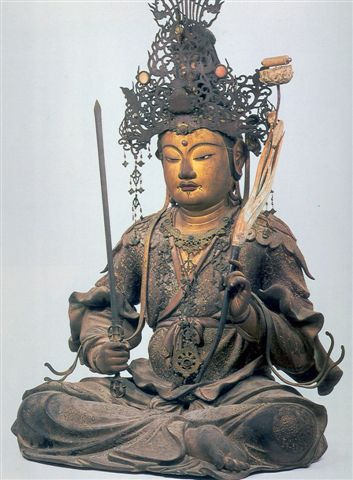
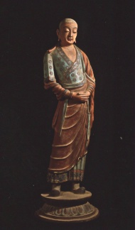

戒淫漫谈
冯冯
迷失在未来. / .誊录
这是典型的显宗观念，认为若不戒淫则断了清净，若不戒酒则失了智慧，若不戒偷盗就断了福德，若不戒吃肉就断了慈悲心。永明禅师是中国佛教史上的著名代表人物。他的《垂诫篇》，是很有名的法语，也是他根据传统佛教来发挥的，所以他说这是三世诸佛同口敷宣，也是天下禅宗一切演畅；他说若不听从实行，就是自毁正因，反行魔说。
永明禅师的《垂诫篇》说：“若不去淫，断一切清净种，若不去酒，断一切智慧种，若不去盗，断一切道德种，若不去肉，断一切慈悲种。三世诸佛同口敷宣，天下禅宗一音演畅，如何后学具不听从，自毁正因，反行魔说。”
原始佛教五戒中，首重戒杀生。依次其余四戒为：戒偷盗，戒邪淫，戒妄语，戒饮酒。
《涅槃经》第三十一品说：“戒是一切善法梯阶。”
戒的阶层，依次而上，小乘分之为：五戒，八戒，十戒，具足戒，而以具足戒为最高级。
《龙树菩萨》著作《大智慧论》第十三品说：“五戒有五种优婆塞……五者，断淫优婆塞。”从文字次序来看，他把戒淫放在五戒之末。
《俱舍论》十四品说：“何等名为五所应离？一者，杀生，二，不与取，三，欲邪行，四，虚诳说，五，饮诸酒。”
永明禅师垂诫把戒淫放在第一位，显然极其重视戒淫，他没提到犯了戒妄语的后果，可能是漏列，他把戒吃肉（源起戒杀生）放在第四位，假如我们推测他重视戒淫更甚至于戒杀生吃肉，则未免武断，但也不无可能。其实，他也可能五戒不分先后，同样重视。一般显宗信徒，对于戒杀，似乎都是能做到而且视为天经地义，行之不懈，但是心理上的负担，可能还不及戒淫之沉重，都视淫行为蛇蝎魔鬼，罪孽深重。永明禅师垂诫的次序，仿佛也有些反映此种畏淫心理吧？
从五戒开始，进一步的戒律是八戒，各经论界说略有不同。《十善戒》经说：“八戒齐者，是过去现在诸佛如来，为在家人制出家法：一者不杀，二者不盗，三者不淫，四者不妄语，五者不饮酒，六者，不做高广大床，七者，不作娼伎乐故往观听，不着香薰衣，八者不过中食。
守午之来历，原来出于八戒。八戒的前面五戒是原始五戒，不过，原始五戒之戒”邪淫“，并未禁绝非邪淫，而八戒中则连一切性行为都禁绝了，《俱舍论》可能是以之作为出家戒吧？《西游记》中的猪悟能，又名猪八戒，现在看到上述之经论，才知道猪八戒的”八戒“是何物。从那八条大戒来看猪八戒，老猪可曾守到一戒呢？恐怕八条戒律全犯到了吧？老猪又贪馋又好色，又爱喝酒，又爱说谎，实在不配称“八戒”，不过，从小说的角度来看，猪八戒实在是个可爱的角色，西游记若没有猪八戒，光有孙悟空，哪能那么吸引读者？
《俱舍论》解释：八戒，亦云八斋戒，八支戒，八关戒，一戒杀生（杀有情之生命），二不与取（禁取他人不给于之物》，三、非梵行（禁男女之媾和），（注意，此处指完全禁止性交，与原文禁邪淫不同），四、戒虚诳（与心相违之诫说），五、戒烟酒，六、禁涂饰鬘舞歌之观听及身涂香饰花鬘观看歌舞，七、禁眠坐于高广华丽之床上，八、禁食非时（禁止过午进食），（因此有过午不食之戒，又名为八斋戒。）
现代人如果要守八戒，恐怕更难了，又不许化妆打扮漂亮，不准看歌舞，可能也不许看电视的各种节目了，不准坐卧于高床华榻，此戒实在无啥道理！可能是古时候唯有床榻，都是盘膝席地而坐，卧席于地面而眠，高床可能是被视为华丽的外来用具，称为“胡床”。
中文的佛教经论，把戒淫的“淫”字，印成女旁的“淫”，尤其没道理之至！水旁的“淫”字，从字义本身来说，是“满溢”“过分”，也有“邪”之意义。原本多用于形容洪水或久雨，名之为“淫雨”，既是过多雨水之意，逐渐演变为形容性行为的不雅字眼。例如：《列子》书中说：“河曲之淫隈，彼中有宝珠，泳可得也。”淫隈之愿意是水曲深处，今人却写成了白字：变成“淫猥”，称为邪恶性行为之鄙视字眼。又如：《后汉书》班固作《京都赋》有句云：“……除工商之淫业，兴农桑之上务……”当时的“淫业”，是指巧末之业，当时的儒家重视儒学与农桑，而轻视工商视之为淫巧（不登大雅之堂）的“贱”业。儒家看不起工商从业人士，称科学技术为奇技“淫”巧。这个“淫”字并无“性”行为之意，只是“低贱”之意。到了现代，“淫”字已变成“性行为”的代名词，“淫业”变成了对娼妓行业的卑视语了。
《淮南子》说：“女娲氏积芦灰，以止淫水”，《山海经》说“爰有淫水，其清洛洛。”此处的“淫水”是指洪水。你问问现代人听到“淫水”或“淫雨”，他心里想到什么去？
再举数例：《孟子》书中说：“……我亦欲正人心，熄邪说，拒诐行，放淫辞。”此处的“淫辞”两字，是指不合于正道的放荡之词。后世则已演变成为邪恶的性行为言词，即是现代人所谓“黄色”，及广东人称为“咸湿”。
现代人骂妇女“淫荡”，可知道“淫荡”原意是什么？“淫荡”者，原意是混浊稠黏之米汤也！古人称之为“留汤”，就是把米粉留在浓汤之内，称之为“淫荡”，不信吗？请看著名的文人王粲的《七哀诗》，其中有句：“何为久滞淫？”（为什么滞留那么久？）“淫荡”怎么会演变成今天的“淫荡”意义？真是百思不得其解矣！
又如：“淫学”一词，原意是指非正统之学问，或“浮华之学”。《吕氏春秋》中《知度篇》说：“至治之世，其民不好空言虚辞，不好淫学流说……”另外一古书云笈七签说：“人能学道，是为真学，诸外事均是淫学。”到了清末学者谭嗣同却说：“研究男女交媾之事，就是淫学！”一代大儒，又是维新人物，竟如此曲解原意，也是奇闻！
大概仍保留“淫”字的原意的用法，应推为“淫威”两字。此处的“淫”是指“凶恶”之“威”，不是听到就联想到“性”行为的“淫”。
把“淫”字跟性交拉在一起之始，可能是《左传》或《诗经》吧？手头缺书，只能姑且归罪于能记忆及的两书之中的句子：《左传》昭公之元年篇：“于是有烦手淫声，焰烟心耳，乃忘平和，君子弗听也”，此乃指郑国卫国的淫声。（春秋时代，郑国与卫国风气最为开放，盛行“田乐”歌舞，今天的民族土风舞曲，当时却是儒家视为不正当的淫声淫学。）
《列子仲尼篇》说：“归家淫思，七日不寝不食，以致骨立。”如从今人的解释就成为：“他（仲尼）回到家中老是想着性交淫思，七天不眠不吃食物，以致饿到骨瘦如柴，好像是骷髅一副站着”。
妈妈米噢！这是孔夫子色情狂的春情发动描写哇！（仲尼者孔子），可不是冤枉了大成至圣先师？儒家写的《列子》传记，怎敢写孔夫子色情狂？孔夫子又怎么会闹色情狂？当然不可能的！原文真正意思是：“孔夫子极点思念要回家，（乡愁到了极点），以致七日都吃不下饭又失眠，以致瘦的像副骷髅。
警幻仙姑怎样教给宝玉什么什么，请你去查看《红楼梦》吧！本文只以之作为“淫”字的考据结束段落，否则你们以为我着了“淫魔”了。
您看，文字的变动多大？历代都在变动文字的开演，可能是从汉代大兴儒学之时就开始有左丘明等等大儒开始把”淫“字贬为”邪恶的性交“了。到了清初的名著《红楼梦》作者曹雪芹索性就把“淫”字用作“性滥交”的特别形容词，在《红楼梦》中，警幻仙姑指看贾宝玉说：“吾所爱于尔者，皆因尔乃天下第一淫人也！”
这些小考据，目的是要指出，“淫”字原意并无今日的“性”乱交之意。佛教传入中国以后，早期的译经者，是由梵僧口授，汉儒受笔，（例如：鸠摩罗什大师口授弟子道安法师，道安原是一位大儒，把金刚经译文汉化写得那么好！虽然还比不上后来唐玄奘亲自译写的“能断金刚经”那么完整与精确，却成为至今仍是最广流传的版本。）我推想可能有些大儒，由于深知“淫”字的原意不是性交，于是他们就创造了一个新的字“淫”来形容邪恶的性交，可说是别出心裁。女字旁的“淫”字，在“词源”“词海”等等汉文大辞典内找不到，只有在佛经的汉文本内才有这个“淫”字。
或者大儒、大翻译家们是基于上述理由而创造了“淫”字，并且以之大大提倡戒“淫”。以我的现代人又兼很西化的眼光来看，这些“淫”字的发明大儒，动机真是不单是“淫”字原意问题，更重大的是，他们把一切邪恶性行为都推到妇女头上！歧视女性！孔夫子说：“唯女子与小人难养也”“女子无才便是德”是千年所受儒家歧视妇女的影响而成的观念，中国自古来不准女子读书识字，受儒家与封建思想影响的男子，把一切邪淫的过失责任都推到妇女身上，他们认为女子是不洁净的，是邪恶的，是女子引诱男子发生性交的，老和尚对小和尚说女人是老虎，小和尚说老虎很可爱，这段笑话就很明白指出了男子对女性的歧视与心理上的矛盾，又要爱老虎，又怕老虎！
人类学家说太古时代的人类是母系统治社会，此种理论似乎值得再探讨！因为，女子天然上就是体力不及男子，石器时代穴居人男子出去猎“妻”，一棒照头打晕了女子，拖尸般搬回穴洞予以奸淫，分明就不是女子所能做的事。从古以来都是男子暴力强奸女子，罕有女子以暴力强奸男子吧？男子天然就较女子具有“性攻击”的天然“武器”与臂力，并非弱者，古代如是，今世也如此，可是卫道者总是把邪恶的淫行责任全推给女性，说女子诱惑男子！“水浒传”写出淫妇潘金莲，可能也是由于男性为社会中心的男尊女卑观念形成的吧？
卫道之士说女人是邪恶是魔鬼引诱人犯罪的，甚至于《楞严经》那么伟大的佛经之一，竟然还有摩登伽女引诱阿难尊者，将破其法体，这样的荒唐故事！以现代人眼光来推断，当时到底是妖女引诱阿难呢？抑或是出了家久矌的壮男阿难自己先动了淫心，性欲冲动？实在是难以判断的疑案！佛经固然是一面倒，全责怪摩登伽女，或者正可反映出古代编写佛经的人当时是一种什么的歧视女性心理吧？这情形也不以古代中国为然，其他宗教也都仍然存有歧视妇女的许多戒律（此篇不便提出，以免引发宗教战争），明眼人一眼便知！
很不幸地，各种宗教界古今都一直在走着男尊女卑的路线，那就不单是佛教独有的“荣幸”！佛教原始只五戒而已，也没有特别指出邪恶的性行为需用女子边或专指责女子？未知是否是从楞严经汉文本开始，有了摩登伽女引诱阿罗汉的一段绯闻，从此佛教戒淫，就写成戒淫？由于楞严经的汉译者是大儒房勉，不免令我怀疑他的译文是否老实存真？抑或整部楞严经都是由他的所杜撰？或者部分是译，另部分是伪造？楞严经文字之优美，胜于很多经典，自不待言，可是其中可疑之点不少，历代学者早有疑惑之言，由于从来无人见过楞严经的原文梵文本或巴利文本，也就无从考据了，这是题外话。
佛陀原始五戒，言简意赅，说戒淫，原意是“邪淫”，并未指出什么是正淫，什么是邪淫，也未指出女子是邪淫的罪魁！是后世弟子借题发挥，未指出女子是邪淫的罪魁！是后世弟子借题发挥，把简单的“戒邪淫”发挥到成为千万字也讲不完的“戒律”细节，大大的发挥了歧视女子，于是，把五戒发展为八戒，九戒，二十五戒，都以戒淫为重心，更强调以妇女为戒淫的对象，若非如此歧视妇女，为何比丘只须二百五十戒？而比丘尼须守三百五十戒乃至五百戒？若细看戒律五百，便知其中都是歧视女性，视 现在又想起，戒邪淫，该用什么道德标准。
女性为主要的主动犯淫行的罪犯，这是很不公平的，不平等的，实在是应该予以改良或全部取缔，其实，无论是在家出家，只要有基本的五戒就够了！五戒做得到，已经很不容易，若苛求比丘守两百五十戒，比丘尼五百戒，我认为是太苛求了！光是背诵那些琐碎戒律也忙不过来啦！哪有专心去求“精进”？哪有空去做济度众生？在这个新世纪新时代，佛教也需要来一些“去芜存菁”的现代化吧？
西藏，锡金，尼泊尔等地带，人民由于穷困，往往无力取妻成家，穷人往往数兄弟合娶一妻，同睡一榻，从汉人尤其是儒家传统道德观之，岂非乱伦？
同地区仍有些地方盛行的风俗，新郎须把新娘送去给大喇嘛“开包”，以求获得佛佑福祉。蒙古有座吸引游客的喇嘛庙，拜祈的是男男女女交媾雕塑的“欢喜佛”，也有同性之交，人兽之交，很多西方外文刊物图文并茂予以介绍，视为文化遗产，这样的“欢喜佛”，汉人能接受吗？不大骂是“邪淫” 吗？满清历代帝皇大婚之前，都必须去该庙住一段时间，学习或见习，可见满族并不以之为邪淫。
北极圈爱斯基摩人，只吃牛肉，不吃素，因为冰天雪地，连草都不生长，而且，把老婆来招待客人过夜，你若不领情，他会视为奇耻大辱，认为你瞧不起他，他会来个百刀子进红刀子出，中国人能接受这种风俗吗？
阿拉伯人，男女分住不同帐篷，不错一个阿拉伯人可以娶四个以上老婆，有钱的酋长，把几十个乃至几百个老婆，关在“帐林”内（禁宫），而他仍然可以自由在外边寻花问柳，这算不算邪淫呢？可是他们认为理所应当，不算是淫。同时，阿拉伯男子帐篷内，一大堆男人睡在一起，天知道他们之间发生什么事？他们视而不见，认为是正常的行为。希腊人男子从古以来就流行同性恋，从最早的奥林匹克运动会开始就如此，他们也视为正当平常的人生，没有人去批评那是邪淫。希腊，美国，英国，加拿大，法国，德国，土耳其，埃及，南美各国……很多国家都已立法视同性恋为合法的私人性行为，连一些教会也都跟进。
网注：关于同性恋议题的佛法观点，请参阅释昭慧法师“同志岂必承负罪轭？”精辟专论。
中国清代，官宦不得嫖娼，却可以公开嫖“相公”（男子）！埃及古代皇室与贵族，都是兄妹姊弟结婚以保血统“纯正”。日本成年男子嫖妓宿娼，视为当然，母亲妻子均不过问。中国大陆有些内陆地带，例如江西地区，仍然流行“租妻制度”，爱租谁的太太多少年月，租金多少，任君选择爱用，租满换人。苗族月夜跳月，男女自由做爱，试婚试到有孕方才选中对象成婚，若以汉人及儒家的道德观念来看这些各地各民族的性行为，又怎么说了！当然都必须戒绝！
网注：清人陆次云《峒溪纤志》记载：跳月者，及春月而跳舞求偶也。栽阳展侯，杏花柳梯，庶蛰蠕蠕，箐处穴居者，茫然蠢动。其父母各率子女，择佳地而相为跳月之会。父母群处于平原之上，子与子左，女与与右，分列于原隰之下……初则欲接还离，少则酣甜畅舞，交驰迅逐矣。是时也，有男近女，而女去者；有女近男，而男去者；有数女争近一男，而男不知所择者；有数男绕近一女，而女不知所避者；有相近复相舍，相舍仍相合。目许心成，笼来笙往，忽焉絻结。于使妍者负妍者，媸者负媸者，终无者负媸者，媸与媸不为人负，不得已而后相负者，媸复见媸，终无所负，涕泣以归，羞愧于得负者。彼负而去者，渡涧越溪，选幽而合，解锦带而互系焉，相携以还跳月之所，各随父母以返而后议聘以牛，牛必双；以羊，羊必偶。先野合而后俪比，循蜚氏之风欤，鸣乎苗矣！
清朝方亨咸所著《苗俗纪闻》，记苗人的婚俗：其媒也，无媒妁。男子壮而无室者，以每年六月六日，干将蹉，悉登山四望。吹树叶呦呦声，则知马郎至矣。未婚之女，群往从之。任自相择配，先合而后议婚。视女之好恶。以定聘之高下，聘无币帛，为牛若干。父母不受聘，聘归舅氏，云还娘钱，如女多，以一婚舅家，舅则不复取聘矣。婚后不同寝处，唯私媾，俟孕而乳，始同处。
作为中国佛教徒，当然道德标准是依照中国佛教，其中也不免是深受儒家影响了的，断不能叫我们去曲从上述的种种奇风异俗与之同流。本文无意主张废除邪淫之戒，只是从不同的角度来分析何谓邪淫，而且也应该认识及了解其他文化背景的道德标准各有不同，如何用中国佛教的“戒”念去引导他们，这可是一个很不容易的大难题！就有老外问我：“你们学佛必须戒淫，是应用那一种从哪国家什么文化背景来制定什么是淫呢？”“还有，自渎算不算是淫呢？”问得真令我无言可答。
佛陀当年并没说明，不过我可以推想他是用当时的当地的道德标准与佛法上的标准。中国佛教信徒当然也就是根据佛法上的标准加上中国文化的道德要求。若能做到律己为先，那就已经是很了不起的成就了。戒淫，说得容易，高调好唱，真正有谁做得到？尤其是男儿身，更有谁能做到此一戒？存心想灭大欲，谈何容易啊！
再说，倘若所有的人都戒了“淫”，人类不就绝种了吗？若无众生，何来的佛？任何生物，无不天然本能去传宗接代延绵其种，人为什么要自绝其种呢？戒绝了性行为(“淫”行)就是修行，就能成佛吗？那么太监们人人早就是佛爷了。
戒邪淫，不如改为“戒暴力之淫”较为符合现代及未来！这是我个人的愚见。
而且，我愚见认为“任何”宗教均应废除独身禁婚制度，以符合人道及不违反天然！与其人人去出家绝种，何如人人在家实行佛法，家家户户信佛行慈善，子孙世世代代奉行佛法？
原载《佛乘世界》第8期：1997年12月10日